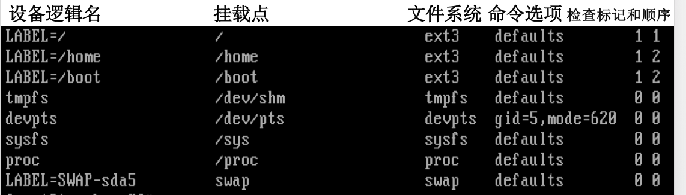
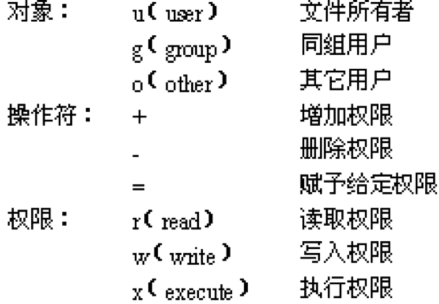

虚拟终端
- Linux字符界面即虚拟终端。
- 默认有7个，1~6是字符界面，第7个是图形化用户界面（启动后）。
- Ctrl+Alt+F1~F6(图形界面)、Alt+F1~F7（字符界面）
Shell命令
Shell可执行的用户命令可分为两大类：内置命令和实用程序；
实用程序又分为：
- Linux程序、应用程序、 Shell脚本、用户程序
- Shell命令提示符
- Shell命令格式
| 命令名 | [选项] | [参数] | 回车 |
|---|---|---|---|
| 命令功能 | -字母(小写居多) | 操作对象 | 提交命令 |
| 一般小写 | –单词 |
注意： * Linux系统严格区分英文字母的大小写 * Shell自动过滤多余的空格
注销、重启与关机
注销
注销－－退出登录状态。注销一个用户不影响其他登录用户的操作。
exit
logout
Ctrl+D重启
reboot
#shutdown –r now关机（不是简单地关闭电源 ）
halt
#shutdown –h now
#shutdown –h 10
The system is going DOWN for system halt in 10 minutes管道
管道将多个命令前后连接起来形成一个管道流。
格式：
命令1|命令2|……|命令n 管道流中的每一个命令都作为一个单独的进程运行，前一个命令的输出结果作为后一个命令的输入，从左到右依次执行，最后一条命令的执行结果显示在屏幕上。若要改变输出可用”>”保存到文件。
bash利用“|”符号可实现管道功能。
[例15] 利用管道统计当前目录下的文件和子目录的数目。
ls |wc -l思考题：分页显示/etc目录中文件和子目录的详细信息。
ls -l /etc|moreLinux下文件和目录的颜色的含义
- 蓝色表示目录
- 绿色表示可执行文件
- 红色表示压缩文件
- 浅蓝色表示链接文件
- 灰色表示其它文件
- 红色闪烁表示链接的文件有问题了
- 黄色是设备文件，包括block, char, fifo。
文本编辑器vi
Vi不是一个排版程序，它不象Word或WPS那样可以对字体、格式、段落等其他属性进行编排，它只是一个文本编辑程序。
Vi没有菜单，只有命令，且命令繁多。 vi的三种工作模式：
1. 命令模式：从键盘输入的任何字符都作为vi二级命令解释，不显示。
2. 文本编辑模式：从键盘输入的任何字符都文本文件内容显示在屏幕。
3. 最后行模式：实际是指屏幕位置，以“:”开始。
启动vi
格式：
vi [文件] 界面：编辑区和状态/命令区
编辑文件
输入文本（命令模式）
- 输入i、I、a、A、o、O命令中的任一个进入文本编辑模式，按ESC键回到命令模式。
- i（insert）a（append）o（open）
- 在文本编辑文本模式:→←↓↑、删除键、DELETE
编辑文本（命令模式）
| dd | 删除当前一整行 |
| yy | 复制当前行至缓冲区 |
| cc | 剪切当前行至缓冲区(Esc后p) |
| p | 粘贴缓冲区内容 |
查找字符串（命令模式）
| /字符串 | 向下查找指定的字符串 | /abc |
| ?字符串 | 向上查找指定的字符串 | ?abc |
| n （next） | 继续查找指定的字符串 | |
| N | 反方向继续查找指定的字符串 |
撤消与重复（命令模式）
| u | undo撤消编辑 |
| . | 重复编辑 |
文本块（多行文本）操作（最后行模式）
| ：set nu | （number） | |
| ：set nonu | ||
| ：n1,n2 m n3 | （move） | :2,5 m 8 |
| ：n1,n2 co n3 | （copy） | :1,4 co 7 |
| ：n1,n2 d | （delete） | :1,4 d |
| ：n1,n2 s/字符串1/字符串2/g | （substitution，global） | :2,5 s/a/A/g |
保存文件与退出vi
在命令模式下连续按两次ZZ键，将保存编辑的内容并退出vi。
最后行模式下
|||
:—|:—|
：w 文件 | 保存为指定的文件。
：q | 退出vi。
：q! | 不保存文件，直接退出vi。
：wq | 存盘并退出vi。
图形化用户界面
图形化用户界面的启动方式
自动启动：安装系统时选择登录类型为「图形化」系统将自动启动图形化用户界面
手工启动：若选择「文本」则出现字符界面。
手工启动图形化用户界面
可在任何一个虚拟终端手工启动图形化用户界面：输入 “startx”命令；该虚拟终端号即改为7号。
桌面操作完成在关闭图形化用户界面后返回到半部字符界面：
- 单击「主菜单」—「注销」—「确定」
- 按CTRL+ALT+BACKSPACE
启动前，用户还设定启动哪种桌面环境：
格式：
switchdesk gnome|kde 功能：将桌面环境切换为GNOME或KDE中任一个。
[例21] 将桌面环境切换为KDE后手工启动。
switchdesk kde
startx 运行级别
是指Linux为了适应不同的需求，在启动的时候规定的不同运行模式。
- 3 完整多用户模式，仅提供字符界面。
- 5 完整多用户模式，自动启动图形化用户界面。
通过修改/etc/inittab文件可改变启动时的运行级别。
id：数字：initdefault的行指定启动时的运行级别，改变在下次启动时生效。
用户
- 用户类型
- 超级用户：root拥有计算机系统的最高权限。UID和GID为0。
- 系统用户：自动创建与系统服务相关的用户UID和GID为1~499。
- 普通用户：由超级用户创建，只能操作拥有权限的文件和目录并管理自己启动的进程。 UID和GID从500开始。
- 超级用户：root拥有计算机系统的最高权限。UID和GID为0。
属性：用户名、口令、 UID 、GID、用户主目录（/home/用户名）、全称、登录Shell
与用户相关的文件
- 用户帐号信息文件
/etc/passwd某/etc/passwd文件内容如下所示：
root:x:0:0:root:/root:/bin/bash
bin:x:1:1:bin:/bin:/sbin/nologin
....
hellen:x:500:500::/home/hellen:/bin/bash- 用户口令信息文件
/etc/shadow某/etc/shadow文件的内容如下所示：
root:$1$nOfXUuNU$xljwp/Nb2n6UVDrodytMx0:12599:0:99999:7:::
bin:*:12599:0:99999:7:::
....
hellen:$$nBA6pODEUVDr67tMUooSx0TYZgyTb63w:12609:0:99999:7::: Shadow文件含义
- 用户名
- 34位MD5加密口令。
- “!!”未设置口令不能登陆。
- “: :”删除口令无口令登陆。
- “!!”未设置口令不能登陆。
- 1970.1.1起到上次修改口令的间隔天数。
- 可修改口令的间隔天数。
- 口令的有效期。
- 口令失效提前提醒天数。
- 口令失效的宽容期。
- 1970.1.1起到帐号失效的天数。
组群
- 组群：将具有相同特性的用户划归到一个组织中。
- 系统组群：安装Linux以及部分服务性程序时，系统自动设置的组群 。
- 私人组群：由超级用户新建的组群 。
- 系统组群：安装Linux以及部分服务性程序时，系统自动设置的组群 。
- 属性
- 组群名、GID、组群口令、附加用户列表（用户之间用“,”分隔 ）
- 组群名、GID、组群口令、附加用户列表（用户之间用“,”分隔 ）
与组群相关的文件
- 组群帐号信息文件
/etc/group
某/etc/group文件的内容如下所示。
root:x:0:root
bin:x:1:root,bin,daemon
....
hellen:x:500: - 组群口令信息文件
/etc/gshadow
/etc/gshadow文件跟/etc/shadow文件类似，根据/etc/group文件而产生，主要用于保存加密的组群口令，只有超级用户才能查看/etc/gshadow文件的内容。
桌面环境下管理用户和组群
桌面环境下依次单击「系统」=> 「管理」=> 「用户和组群」，启动「用户管理者」窗口。
- 管理用户
- 新建用户
- 修改用户属性
- 删除用户
- 管理组群
- 新建组群
- 修改组群属性
- 删除组群
- 显示所有用户和组群
管理用户的Shell命令
passwd
格式：passwd [选项] [用户]
功能：设置或修改用户的口令以及口令（>6，不能过于规律、重复或字典单词）的属性。
主要选项说明：
-d 用户名（delete）、-l 用户名（lock） 、u 用户名（unlock） -S 用户名（status）
usermod
格式：usermod [选项] 用户名
功能：修改用户的属性，超级用户命令。
主要选项说明：
-c 全名、-d 主目录、-g 组群ID或组群名、-G 组群ID或组群名、-u 用户ID
-l （login name） 用户名(usermod增加)
userdel
格式：userdel [-r] 用户名
功能：删除指定用户帐号，超级用户命令。
选项说明 ：
-r 系统不仅删除此用户帐号，还将用户的主目录也一并删除。
[例6] 删除jerry用户帐号及其主目录。
查看普通用户个人主目录信息
ls /home
# userdel -r jerry 验证结果
ls /home su
格式：su [-] [用户名]
功能：在同一个虚拟终端上，切换用户身份。“exit”命令可返回本来的用户身份。
选项说明：-选项 切换为新用户的同时使用新用户的环境变量（工作目录、shell和命令提示符）。
id
格式：id [用户名]
功能：查看用户的UID、GID和用户所属组群的信息。如果不指定用户，则显示当前用户的相关信息。
批量新建多个用户帐号
- 编辑用户信息文件，如user。
- 创建用户口令文件，如pword。
利用
newusers<用户信息文件命令批量创建用户帐号。newusers< user利用
pwunconv命令暂时取消shadow加密。Password un Convention（约定）利用
chpasswd<用户口令文件命令为用户设置口令。chpasswd < pword利用
pwconv命令恢复shadow加密。
管理组群的Shell命令
groupadd
格式：groupadd [选项] 组群名
功能：新建组群，超级用户命令。
主要选项说明：-g 组群ID 指定GID
groupmod
格式：groupmod [选项] 组群名
功能：修改指定组群属性，超级用户命令。
主要选项说明：
-g 组群ID 指定GID
-n 组群名（name） 指定组群名
groupdel
格式：groupdel 组群名
功能：删除指定的组群，超级用户命令。
注：在删除指定组群之前必须保证该组群不是任何用户的主要组群，否则需要首先删除那些以此组群作为主要组群的用户才能删除这个组群。
进程管理与系统监视
启动进程与作业
- 进程与作业的启动方式
- 手工启动：由用户输入Shell命令回车后直接启动的进程。
- 前台启动：用户输入一个Shell命令后按下Enter键就启动了一个前台作业。
- 后台启动：Shell命令的末尾加上“&”符号，再按下Enter键，那么就将启动一个后台作业.
- 前台启动：用户输入一个Shell命令后按下Enter键就启动了一个前台作业。
- 调度启动是系统按用户要求的时间或方式执行特定的进程。Linux中可实现：
at调度、batch调度和cron调度。
- 手工启动：由用户输入Shell命令回车后直接启动的进程。
作业的前后台切换
bg (background)
格式：bg [作业号]
功能：将前台作业切换到后台运行。若没有指定作业号，则将当前作业切换到后台。
fg（Foreground）
格式：fg [作业号]
功能：将后台作业切换到前台运行。若没有指定作业号，则将后台作业序列中的第一个作业切换到前台运行。
管理进程与作业的Shell命令
jobs
格式：jobs [选项]
功能：显示当前所有的作业。
主要选项说明：-p（process）、-l（list）
ps（Process Status）
格式：ps [选项]
功能：显示进程的状态。无选项时显示当前用户在当前终端启动的进程。
主要选项说明：
-a（all）、-e、-l（list）、-u（user）、-x、-t
ps输出
- S（State）状态列
- R（Running）运行
- S （Sleep）休眠
- T （Stopped或Traced）终止或暂停
- Z （Zombie）僵死
- X（dead）
- ……
- R（Running）运行
- UID（User ID）
- PID（Process ID）
- PPID（Parents Process ID）
- NI（Nice）
- TTY（Terminal）
- CMD（Command）
- SZ（Size）占用内存以KB为单位
- TIME已运行时间
kill
格式1：kill [选项] 进程号
格式2：kill % 作业号
功能：终止正在运行的进程或作业。超级用户可终止所有的进程，普通用户只能终止自己启动的进程。
主要选项说明：- 9 强行终止指定进程。
终止正在运行中进程Ctrl+C
进程的优先级
- Linux中所有的进程根据其所处状态，按照时间顺序排列形成不同的队列。系统按一定的策略进行调度执行队列中的进程。
- 若用户因为某种原因希望尽快完成某个进程的运行，可通过修改进程的优先级来改变其在队列中的排列顺序，从而尽快得以运行。
- 启动进程的用户或超级用户可以修改进程的优先级，但普通用户只能调低优先级，而超级用户既可以调低优先级也可以调高优先级。
- Linux中进程优先级的取值范围为-20~19之间的整数，取值越低，优先级越高，默认为0。
nice
格式：nice [-优先级值] 命令
功能：指定将启动的进程的优先级。不指定优先级值时，将优先级设置为10。
renice
格式：renice 优先级值 参数
功能：修改运行中的进程的优先级，设定指定用户或组群的进程优先级。
主要参数说明：-p 进程号、-u 用户名、-g 组群号
进程调度
Linux允许用户根据需要在指定的时间自动运行指定的进程，也允许用户将非常消耗资源和时间的进程安排到系统比较空闲的时间来执行。
- 对于偶尔运行的进程采用at或batch调度。
- 对于特定时间重复运行的进程采用cron调度。
at调度
格式：at [选项] 时间
功能：设置指定时间执行的指定的命令。
主要选项说明：
–f 文件名（file）、-l（list）、-d（delete）
时间表示：绝对（HH:MM，AM/PM）、相对（now+时间间隔，单位minutes,hours,day,week）、直接计时法（today,tomorrow,midnight,noon,teatime[4点]）
[例8] 在3分钟后向登录在系统上的所有用户发送“Good”信息。
at now+mintues
at>who
at>wall Good
Ctrl+D 注：who执行结果送入邮箱，用mail查看。
batch调度
格式：batch [选项] [时间]
功能：与at命令几乎相同一样，唯一的区别是如果不指定运行时间，进程将在系统较空闲时运行。batch调度适合于时间上要求不高，但运行时占用系统资源较多的工作。batch命令 的选项与at命令相同。
cron
at调度和batch调度中指定的命令只能执行一次。
但在实际的系统管理中有些命令需要在指定的日期和时间重复执行，例如每天例行要做的数据备份。cron调度正可以满足这种需求。
cron调度与crond进程、crontab命令和crontab配置文件有关。
crontab配置文件
保存cron调度的内容，共6个字段，从左到右依次为：
分钟 小时 日期 月份 星期 命令 0-59 0-23 01-31 01-12 0-6 合法shell命令 注：所有字段不能为空，若不指定内容则用“*”填空；字段之间用空格分开；可以用“-”表示一段时间，如1-5；也可使用“,”作时间分割，如5,15,25.
如果执行的命令未使用输出重定向，那么系统将会把执行结果以邮件的方式发送给crontab文件的所有者。
用户的crontab配置文件保存于/var/spool/cron目录中，其文件名与用户名相同。
crontab
格式：crontab [选项]
功能：维护用户的crontab配置文件。
主要选项说明：
-e（edit）、-l（list）、-r（erase）
[例9]xufqin用户创建一个新的crontab配置文件。
crontab –e 系统自动将xufqin（与用户同名）文件挂载到/var/spool/cron下
crond进程
crond进程在系统启动时自动启动，并一直运行于后台。
crond进程负责检测crontab配置文件，并按照其设置内容，定期重复执行指定的cron调度工作。
[例10] xufqin用户设置cron调度，要求每周五的17点00分将/home/hellen/data目录中的所有文件归档并压缩为/backup目录中的hellen-data.tar.gz文件。
输入“crontab -e”命令后，启动vi文本编辑器，用户输入以下配置内容后保存退出。

查看crontab结果
- 查看crontab
crontab –l 或
cat /var/spool/cron/xufqin - 查看crontab执行结果
mail
cat 文件名（若输出重定向）
man mail系统监视
桌面环境下监视系统
「主菜单」=>「系统工具」=>「系统监视器」
可实现对CPU、硬盘、内存和交换分区的实时监视
实施系统监视的Shell命令
who
格式：who [选项]
功能：查看当前已登录的所有用户。
主要选项说明：-m、-H（heading）
top
格式：top [-d 秒数]
功能：动态显示CPU利用率、内存利用率和进程状态等相关信息，是目前使用最广泛的实时系统性能监视程序。默认每5秒钟更新显示信息，而“-d 秒数”选项可指定刷新频率。
free
格式：free [选项]
功能：显示内存和交换分区的相关信息。
主要选项说明：-m、-t（total）、-s 秒数
系统日志管理
- 系统日志记录着系统运行的详细信息。
- 系统日志文件都保存于/var/log目录中：
- boot.log、cron、dmesg、maillog、spooler、rpmpkgs、secure、messages、XFree86.0.log
- boot.log、cron、dmesg、maillog、spooler、rpmpkgs、secure、messages、XFree86.0.log
- 直接查看/var/log目录中日志文件的内容
- 「主菜单」=>「系统工具」=>「系统日志」
文件系统
Linux的基本文件系统
ext（Extended File System）文件系统系列，ext、ext2和ext3，是专为Linux设计的文件系统。继承UNIX文件系统的主要特点：
- 三级索引结构
- 目录树型结果
- 设备作特别文件处理
ext3与ext2相比：
- 高实用性
- 数据的完整性
- 更快的速度
- 方便的数据转换
Linux支持的文件系统
Linux采用虚拟文件系统技术，可支持多种常见的文件系统，并允许用户在不同的磁盘分区上安装不同的文件系统。 Linux支持的其它文件系统类型主要有：
- msdos：MS DOS采用的FAT文件系统。
- vfat：Windows中通用的文件系统。
- sysV：UNIX中最常用的system V文件系统。
- nfs：网络文件系统（Network File System）。
- iso9660：CD-ROM的标准文件系统。
Windows支持的文件系统
- FAT（File Allocation Table ，文件分配表 ）：由微软发明并拥有部分专利的文档系统，供MS-DOS使用，也是所有非NT内核的微软视窗操作系统所使用的文件系统。
- FAT 16
- FAT 32
- FAT 16
- NTFS：(New Technology File System)新技术文件系统
- CDFS：(Compact Disc File System) 光盘文件系统
文件系统的挂载与卸载
- 挂载就是将存储介质的内容映射到指定的目录中，此目录即为该设备的挂载点。
- 硬盘上的各个磁盘分区都会在启动过程中自动挂载到指定的目录，并在关机时自动卸载。
- 移动存储介质既可以在启动时自动挂载，也可以在需要时手动挂载/卸载。
- 硬盘上的各个磁盘分区都会在启动过程中自动挂载到指定的目录，并在关机时自动卸载。
- 文件系统的挂载记载在/etc/fstab文件中。
cat /etc/fstab 
- sys文件系统：将系统中的设备组织成层次结构，并向用户程序提供详细的内核数据结构信息。
- block目录：块设备。bus目录： 总线类型。class目录： 设备类型。devices目录：系统中所有设备按设备挂载的总线类型组成层次结构。
- block目录：块设备。bus目录： 总线类型。class目录： 设备类型。devices目录：系统中所有设备按设备挂载的总线类型组成层次结构。
- devpts文件系统：针对虚拟终端的。
- proc文件系统：系统专用，只存在于内存；借助虚拟文件系统，实现系统信息窗（动态从内核读取信息）
- 数字（PID）命名目录：系统运行中进程目录
- bus、fs、ide、scsi、net、sys、tty……等信息
- 数字（PID）命名目录：系统运行中进程目录
- tmp文件系统：虚拟内存（物理内存+交换分区）文件系统，大小随文件的复制和创建而增减，最大是物理内存+交换分区。
关于挂载的注意事项
- 挂载点是目录，该目录必须存在
- 若空最好
- 若非空：系统则隐藏这些文件，直至卸载才可访问
- 若空最好
- 1个挂载点1次只能挂载1个设备
- 对设备访问变为对该挂载点的访问
- 使用完必须正确卸载已挂载设备
管理磁盘的Shell命令（ mount ）
mount
格式：mount [选项] [设备名] [目录]
功能：将磁盘设备挂载到指定的目录，该目录即为此设备的挂载点。
主要选项说明：
–t 文件系统类型（type）、-r（read）
umount命令（undo mount）
格式：umount 设备|目录
功能：卸载指定的设备。可使用设备名，也可以使用挂载目录名进行卸载。
【例3】卸载U盘。
umount /dev/sda1 或
umount /mnt/sub df命令（Display file system）
格式：df [选项]
功能：显示文件系统的相关信息。
主要选项说明：
-a（all）、-t 文件系统类型（type）、-x 文件系统类型（except除…以外）、-h（human）
mkfs命令（make file system）
格式：mkfs [选项] 设备
功能：在磁盘上建立文件系统，即磁盘格式化。
主要选项说明：
-t 文件系统类型（type）、-c（check）
注：每个文件系统都包含一个lost+found目录，用于保存执行文件系统检查操作中发现的问题文件。
fsck命令（file system check ）
格式：fsck 设备
功能：检查并修复文件系统。
文件系统的配额管理
- 文件系统配额是一种磁盘空间的管理机制。
- 限制用户或组群在某个特定文件系统中所能使用的最大空间。分用户级和组群级的配额管理。
- 配额管理文件保存于实施配额管理的那个文件系统的挂载目录中，aquota.user文件保存用户级配额的内容，而aquota.group - 文件保留组群级配额的内容。
- 根据配额特性可将配额分为硬配额和软配额。
- 只有采用Linux文件系统（ext2和ext3）的文件系统（磁盘分区）才能进行配额管理。
quotacheck命令
格式：quotacheck 选项
功能：检查文件系统的配额限制，并可创建配额管理文件。
主要选项说明：
-a（all）、-g（group）、-u（user）、-v（verbose）
edquota命令
格式：edquota 选项
功能：编辑配额管理文件。
主要选项说明：
用户名、-g 组群名、-t、-p 用户名1 用户名2
quota命令
格式：quota 用户名
功能：查看指定用户的配额设置。
quotaon命令
格式：quotaon 选项
功能：启动配额管理，其主要选项与quotacheck命令相同。
与之相反的quotaoff命令可关闭配额管理。
[例10] 对/home文件系统实施用户级的配额管理，普通用户hellen和jerry的软配额为100M，硬配额为150M。
- 使用任何文本编辑工具编辑/etc/fstab文件，对“LABEL=/home”所在行进行修改，增加命令选项usrquota。
- 重新启动系统，让Linux按照改动后的/etc/fstab文件重新挂载各文件系统。
- 利用quotacheck命令创建aquota.user文件。
- 利用edquota命令编辑aquota.user文件，设置用户hellen的配额。
- 利用edquota命令将用户hellen的配额设置复制给jerry用户。
- 启动配额管理。
文件概述
- 是指Linux按照文件层次标准对文件（目录）进行排列布局。
文件系统层次标准（File system Hierarchy Standard）是一个文档，它指定 Linux 或其他类 UNIX - 系统上目录的布局。 - 创建它是为了提供一个共用的布局，让不同的 Linux 发行版将文件放在相同的位置，从而简化独立于发行版的软件开发。
常用基本目录及功能
| / | Linux目录树起点 | |
| bin | binary | Linux的常用命令 |
| boot | 系统启动时所需程序 | |
| dev | device | 所有外部设备文件 |
| etc | 拉丁文 | 系统管理时要用到的各种配置文件和子目录 |
| home | 普通用户个人主目录 | |
| lib | library | 系统动态连接共享库，几乎所有的应用程序都会用到该目录下的共享库 |
| media | 挂载点 | |
| mnt | 临时挂载点 | |
| proc | procedure | 获取在内存中由系统自己产生的信息（虚拟文件系统与有关执行程序的资料 ） |
| root | 超级用户主目录 | |
| sbin | specialties | 系统管理员的系统管理程序 |
| tmp | temporary | 各程序执行时产生的临时文件 |
| usr | user | 各应用程序和文件 |
| var | variety | 日志文件 |
| opt | option | 额外软件 |
文件分类
- 普通文件（灰色）
- 二进制文件直接以文本的二进制形式存储，一般是可执行文件，多媒体文件等。
- 文本文件以文本的ASCII编码形式存储，系统中配置文件，如passwd。
- 二进制文件直接以文本的二进制形式存储，一般是可执行文件，多媒体文件等。
- 目录文件简称目录（蓝色）
- 存储一组相关文件的位置、大小、创建时间等信息。
- 存储一组相关文件的位置、大小、创建时间等信息。
- 链接文件（浅蓝色）
- 硬链接文件保留所链接文件的索引节点（磁盘的具体物理位置）信息。
- 符号链接文件类似于Windows中的快捷方式，其本身并不保存文件内容，而只记录所链接文件的路径。
- 硬链接文件保留所链接文件的索引节点（磁盘的具体物理位置）信息。
- 设备文件（黄色）
- 存放I/O设备信息的文件。Linux中的每个设备（安装了驱动程序或兼容）都用一个设备文件来表示。
- 存放I/O设备信息的文件。Linux中的每个设备（安装了驱动程序或兼容）都用一个设备文件来表示。
文件名
- 文件名是文件的唯一标识符。Linux中文件名遵循以下原则：
- 除“/”以外的所有字符都可使用，但为了避免系统混乱，尽量不使用特殊字符。
- 可使用长文件名，严格区分大小写字母。
- 尽量设置代表文件内容和类型的有意义的文件名。
- 可使用长文件名，严格区分大小写字母。
- Linux不强调文件扩展名的作用。
- 如：test.txt，test均可以是文本文件。
- 如：test.txt，test均可以是文本文件。
- 数据文件通常还是使用“文件主名.扩展名”格式，并遵循一定的扩展名（文件类型）规则。
- 如：test.exe，
- 如：test.exe，
- 可以不使用扩展名或使用多个扩展名。
- 如：test， test.tar.gz
- 如：test， test.tar.gz
文件权限
访问权限
- 读取权限（read）：浏览文件/目录中内容的权限。
- 写入权限（write）：
- 对文件而言是修改文件内容的权限；
- 对目录而言是删除、添加和重命名目录内文件的权限。
- 对文件而言是修改文件内容的权限；
- 执行权限（execution）：
- 对可执行文件而言是允许执行的权限；
- 对目录来讲是进入目录的权限。
- 对可执行文件而言是允许执行的权限；
- 读取权限（read）：浏览文件/目录中内容的权限。
与文件权限相关的用户分类
- 文件所有者Owner （user，u）：建立文件或目录的用户。
- 同组用户（group，g）：与文件所有者同属一个组群中的所有用户。
- 其它用户（other，o）：既不是文件所有者，又不是文件所有者同组用户的其他所有用户。
- 超级用户负责整个系统的管理和维护，拥有系统中所有文件的全部访问权限。
- 文件所有者Owner （user，u）：建立文件或目录的用户。
访问权限的表示法（ls -l）
- 字母表示法
- 数字表示法
- （— 0） （–x 1） （-w- 2） （-wx 3）
- （–x（r– 4）（r-x 5） （rw- 6） （rwx 7）
- （— 0） （–x 1） （-w- 2） （-wx 3）
注：文件初始访问权限在创建时由系统
- 字母表示法
修改文件权限的Shell命令

chmod命令（change mode）
格式：chmod 模式 文件
功能：修改文件的访问权限。
模式可由3部分组成：
【例1】用vi新建file文件，内容不限，查看该文件的访问权限，取消其它用户对file文件读的权限。
chmod o-r file 【例2】增加同组用户对file文件写的权限。
chmod g+w file 【例3】同时增加其它用户对file文件的读写权限。
chmod o+rw file (o+r+w) 【例4】将file文件的访问权限改为664。
chmod 664 file chgrp命令（ change group）
格式：chgrp 组群 文件
功能：改变文件的所属组群。
【例】将file文件所属的组群改为root。
ls –l
su
chgrp root file
ls -l chown命令（ change owner ）
格式：chown 文件所有者[:组群] 文件
功能：改变文件的所有者，并可一并修改文件的所属组群。
【例1】将文件file的所有者由xufqin改为root。
chown root file 【例2】新建test文件，一并修改所有者和组群为xufqin和users。
chown xufqin : users test 目录和文件管理
桌面环境下管理目录和文件
桌面环境下用户启动Nautilus或Konqueror文件管理器，都可以查看文件和目录的信息，并可利用文件管理器的菜单命令或快捷菜单，对文件和目录进行移动、复制、重命名、删除、修改属性等操作，还能创建目录和符号链接文件。
管理目录和文件的Shell命令
mkdir命令（make directory）
格式：mkdir [选项] 目录
功能：创建目录。
主要选项说明：
-m 访问权限（mode）、-p（parents）
【例1】创建名为test1的目录。
mkdir test1
ls –l 思考题：如何同时创建多个平级目录？如，test3和test4。
【例2】在当前目录下创建名为test2的目录，并一并在其下创建linux子目录。
mkdir –p test2/linux
ls
ls test2 【例3】用一条命令创建具有如此结构的目录树。
$mkdir –p dir1/sub1 dir1/sub2/test1 dir1/sub2/test2 dir1/sub3 mv命令（move）
格式：mv [选项] 源文件或源目录 目的文件或目的目录
功能：移动或重命名（同一目录）文件或目录。
主要选项说明：
-b（backup）、-f（force）
【例1】将file文件移动到test1目录，并重名名为file1。
mv file test1/file1 【例2】将file1文件重命名为file.txt。
mv test1/file1 test1/file.txt 【例3】将sub2整体移动到sub1目录中。
mv dir1/sub2 dir1/sub1/ cp命令（copy）
格式：cp [选项] 源文件或源目录 目的文件或目的目录
功能：复制文件或目录。
主要选项说明：
-b（backup）、-f（force）、-r或-R（recursive）
【例1】复制file.txt文件为file.backup，保存在当前目录下。
cp test1/file.txt file.backup
ls 【例2】复制file.txt文件为file.backup保存在当前目录下，若file.backup文件已存在，则对原文件制作备份。
cp –b test1/file.txt file.backup（注：备份文件名file.backup~） 【例3】整体复制test2目录至test1目录下。
cp –r test2 test1/ rm命令（remove）
格式：rm [选项] 文件或目录
功能：删除文件或目录。
主要选项说明：
-f（force）、-r或-R（recursive）
【例1】删除test1目录下file.txt文件。
rm test1/file.txt 【例2】 删除test1目录，连同其下子目录。
rm –r test1 【例3】 强制删除test2目录，连同其下子目录。
rm –rf test2 ln命令（link）
格式：ln [选项] 目标文件 链接文件
功能：建立链接文件，默认建立硬链接。
主要选项说明：
-b（backup）、-s（symbolic）
find命令
格式：find [路径] 表达式
功能：从指定路径开始向下搜索满足表达式的文件和目录。
主要表达式：
-name 文件、-g 组群名、-user 用户名、-type 文件类型、-size [+|-]文件大小
【例1】从/etc目录开始查找以“fs”开头的文件和目录。
find /etc –name fs* 【例2】从/etc目录开始查找以“f” 或“s”开头的文件和目录，并分页显示。
#find /etc –name [fs]*|more
【例3】从当前目录开始查找所有目录文件。
find –type d 【例4】从当前目录开始查找小于10KB的文件。
find –size -10k grep命令（pattern）
格式：grep [选项] 字符串 文件列表
功能：从指定文本文件或标准输出中查找符合条件的字符串，默认显示其所在行的内容。
主要选项说明：
-n（number）、-v （invert除）、-i （ignore不区分大小写）
【例1】查找/etc/fstab文件中包含“SwAp”的行，并显示其行号。
grep –n SwAp /etc/fstab 【例2】不区分大小写，查找/etc/passwd文件中除“xufqin”外的行，结果保存到dir1目录下sub3子目录test.txt文件中 ）
grep –vi xufqin /etc/passwd > dir1/sub3/test.txt 思考题：root用户检查xufqin用户是否已登录。
who|grep xufqin du命令（display usage）
格式：du [选项] [目录或文件]
功能：显示目录或文件大小，默认为KB为单位。参数为目录时，默认递归显示指定目录及其所有子目录的大小。
主要选项说明：
-a（all）、-h（human） 、-s（summarize）
【例1】以人性化方式查看xufqin用户主目录的大小。
du –sh /home/xufqin 【例2】以人性化方式查看etc目录的大小。
du –sh /etc 【例3】以人性化方式查看etc目录及其子目录的大小。
du –h /etc Examples
将/etc/passwd文件复制到当前目录中。
cp /etc/passwd ./用一条命令新建具有如图所示结构的目录树。
mkdir –p dir/dir1 dir/dir2/dir21 dir/dir2/dir22将xufqin个人用户主目录整体复制到dir1目录中。
cp –r /home/xufqin dir/dir1/不区分大小写，将/etc/inittab 文件中含“Id:5:”行的内容保存到dir/dir2/dir22的ID.txt文件中。
grep –i Id:5: /etc/inittab> dir/dir2/dir22/ID.txt统计/etc/inittab 文件包含“ #”行数，结果追加到上题ID.txt 中。
grep /etc/inittab |wc –l>> dir/dir2/dir22/ID.txt将dir/dir1目录移到dir/dir2下并重命名为dir/dir2/dir23。
mv dir/dir1 dir/dir2/dir23删除原dir/dir2/dir21目录
rm -r dir/dir2/dir21以易读方式显示dir目录大小。
du –hs dir以易读方式显示dir目录及子目录大小。
du –h dir从/etc目录向下查找扩展名为.conf的文件。 （统计文件数）
find /etc –name *.conf find /etc –name *.conf |wc -l查找/etc目录下扩展名为.conf的文件。（统计文件数并将结果保存到dir目录的wc.txt文件中）
ls /etc/*.conf ls /etc/*.conf |wc –l> dir/wc.txt分别查看dir/wc.txt的访问权限（解读，转换成数字表示）和内容
ls –l dir/wc.txt cat dir/wc.txt强制删除dir/wc.txt文件。
rm –f dir/wc.txt强制删除dirmulu。
rm –rf dir
文件归档与压缩
桌面环境下归档与压缩文件
- 「主菜单」=>「附件」=>「文件打包器」。
- 新建归档/压缩文件
- 更新归档/压缩文件
- 还原归档/压缩文件
- Nautilus文件管理器
- 快速归档/压缩文件
- 快速还原归档/压缩文件
归档与压缩文件的Shell命令
tar命令
格式：tar 选项 归档/压缩文件 [文件或目录列表]
功能：将多个文件或目录归档为tar文件，如果使用相关选项还可压缩归档文件。
将/etc目录下所有扩展名为.conf文件归档保存到当前目录名为etcconf.tar文件。
tar –cf etcconf.tar /etc/*.conf将/home目录下所有文件归档并压缩，保存到当前目录名为home.tar.gz文件。
tar –czf home.tar.gz /home查看etcconf.tar文件内容。
tar –tf etcconf.tar查看home.tar.gz文件内容。
tar –tf home.tar.gz将当前目录中install.log文件追加到etcconf.tar文件。
tar –rf etcconf.tar install.log还原etcconf.tar中的install.log文件
tar –xf etcconf.tar install.log
gzip命令
格式：gzip [选项] 文件|目录
功能：压缩/解压缩文件。无选项参数时执行压缩操作。压缩后产生扩展名为.gz的压缩文件，并删除源文件。
主要选项说明：
-d（decompress）、-r（recursive）、-v（verbose）
【例1】将etcconf.tar文件压缩为.gz格式。
gzip etcconf.tar 【例2】当前目录的所有文件压缩为.gz格式。
gzip * 【例3】 对etcconf.tar.gz进行解压缩。
gzip –d etcconf.tar.gz 【例4】 对当前目录下的.gz进行解压缩。
gzip –d * zip命令
格式：zip [选项] 压缩文件 文件列表
功能：可将多个文件归档后压缩。默认不删除源文件 。
主要选项说明：
-m（remove）、-r（recursive）
【例】将当前目录下的所有文件归档压缩为file.zip文件。
zip file.zip * unzip命令
格式：unzip [选项] 压缩文件
功能：解压缩扩展名为.zip的压缩文件。
主要选项说明：
-l（list）、-t（test）、-d 目录、-n（no覆盖）、-o（覆盖）
【例1】 查看file.zip文件所包含的文件。
unzip –l file.zip 【例1】 将file.zip文件解压到dir新目录中。
mkdir dir
unzip –d dir file.zip 将/home打包并压缩为home.tar.gz，保存在当前目录中。
tar –tzf home.tar.gz /home将root用户个人用户主目录中的install.log文件加入home.tar包文件中。
gzip –d home.tar.gz tar –rf home.tar /root/install.log假设/root/install.log文件遭到损坏，查看home.tar包文件内容，确认其中有install.log文件，并进行还原。
tar –tf home.tar tar –xf home.tar install.log采用gzip格式压缩当前目录中所有文件，并查看结果。
gzip * ls将当前目录中所有文件压缩为tar.zip文件，并查看结果。
zip tar.zip * ls查看tar.zip的内容。
zip –l tar.zip
RPM软件包管理
- RPM（RPM Package Manager）Linux中公认的软件包管理标准。
- 文件名采用固定格式：“软件名-主版本号-次版本号.硬件平台类型.rpm”。
- 桌面环境下可安装和删除安装光盘上的RPM软件包。
管理RPM软件包
安装RPM软件包
格式：rpm –i[选项] 软件包文件
功能：安装RPM软件包。
主要选项说明：
-v（verbose）、-h（hash）、–replacepkgs
升级RPM软件包
格式：rpm –U[选项] 软件包文件
功能：升级RPM软件包。如果当前系统中未安装指定的RPM软件包则直接安装。
主要选项说明：
-v（verbose）、-h（hash）
查询RPM软件包
格式：rpm –q[选项]
功能：查询软件包的相关信息。
主要选项说明：
-a（all）、-f 文件（file归属）、i （list ）
【例1】查询系统中已安装哪些软件包。
rpm –qa 【例2】查询系统中是否已安装vsftpd软件包。
rpm –qa|grep vsftpd或rpm –qa vsftpd 【例3】查询系统中已安装vsftpd软件包详细信息。
rpm –qi vsftpd 【例4】查询系统中已安装samba软件包详细信息。
rpm –qi samba 验证RPM软件包
格式1：rpm –V 软件包
格式2：rpm –V[选项]
功能：验证软件包是否正常。
主要选项说明：
-a（all）、-f 文件（file）
用8位二进制表示某项验证的失败：
| S | （size） |
| M | （mode） |
| 5 | （MD5） |
| D | （device） |
| L | （link） |
| U | （user） |
| G | （group） |
| T | （time） |
删除RPM软件包
格式：rpm –e 软件包
功能：删除RPM软件包。
注：删除软件包时，参数不能使用RPM软件包的完整文件名，只能使用软件名称或软件名称加上版本编号。
命令
date
格式：date [MMDDhhmm[YYYY]]
功能：查看或修改系统时间。
cal
cal命令（calendar）
格式：cal [YYYY]
功能：显示日历。
pwd
格式：pwd
功能：显示当前目录的绝对路径。
注： * 绝对路径是指从根目录（/）开始到当前目录（文件）的路径；例，/home/xufqin * 相对路径是指从当前目录到其下子目录（文件）的路径。例， home/xufqin，xufqin * 目录之间的层次关系总是用“/”来表示。 * 行首的“/”表示根目录，即该路径为绝对路径。
cd
格式：cd [目录]
功能：切换到指定目录。
注：
* 超级用户的个人用户主目录是/root；
* 普通用户的个人用户主目录是/home下与该用户同名的子目录，如普通用户hellen主目录默认是/home/hellen。
ls
格式：ls [选项] [文件|目录]
功能：显示指定目录中的文件和子目录信息。
主要选项说明：
-a（all）、-l（long）、-d（directory）、-t（time）
-R（recursive）…
cat
格式：cat [选项] 文件列表
功能：显示文本文件的内容。
主要选项说明:
* -n（number）在每一行前显示行号
more
格式：more 文件
功能：分屏显示文本文件的内容。
注：
按Enter键显示下一行内容；按空格键显示下一屏的内容：按q键，则退出more命令。
less 命令和more命令唯一的不同是more命令只能向后翻页，而less命令可以向前向后翻页。
tail
格式：tail [选项] 文件
功能：显示文本文件的结尾部分，默认显示文件的最后10行。
主要选项说明：
-n 数字（number）指定显示的行数
mam
格式：man 命令名
功能：显示指定命令的手册页帮助信息。
注：
屏幕显示出该命令在Shell手册页的第一屏帮助信息，用户可使用上下方向键、PgDn、PgUp键前后翻阅帮助信息，按q键则退出man命令。
–help选项
格式：命令名 –help
功能：显示指定命令的帮助信息。
使用–help选项也可获取命令的的帮助信息，但不是所有的命令都有此选项。help选项提供的帮助信息多为中文。
wc
格式：wc [选项] 文件
功能：显示文本文件的行数、字数和字符数。
主要选项说明：-c（character）、-l（line）
-w（word），默认=clw
Shell命令的通配符
- 通配符“”
通配符“”代表任意长度的任何字符。 - 通配符“?”
通配符“?”代表任何一个字符。 - 字符组通配符“[ ]”、“-” 和“！”
“[ ]”表示指定的一个字符范围，而“[ ]”内的任意一个字符都用于匹配。如“[abcde]”
“-”在“[ ]”内表示连接符。“[a-e]” “！”表示不在该范围之内的其他字符。如“[!Ds]*” - “*”不能匹配“.”打头的隐藏文件
- “*”、“?” 只在[ ]外起特殊作用，“！”、“-”只在[ ]内起特殊作用。
输入输出重定向（输出）
Linux的标准输入是指键盘，标准输出和标准错误输出均是屏幕。
- 输出重定向－－命令执行的结果将不在标准输出（屏幕）上显示，而是保存到某一指定文件的操作。Bash通过符号“>”来实现输出重定向功能。
- 附加输出重定向 功能与输出重定向基本相同，不同的之处在于：附加输出重定向将输出内容添加在原来文件已有内容的后面，而不会覆盖其内容。Bash通过符号“>>”来实现。
创建和合并文本文件
- 创建
格式：cat > 文本文件名
举例：cat > f2
输入完，按回车键到下一行，再按Ctrl＋D结束。 - 合并
格式：cat 文本文件列表 > 文本文件名
将“文本文件列表 ”中所有文件内容合并到“文本文件名”所指的文件中。
举例：cat f1 f2 > f3
输入输出重定向（错误）
输出重定向
Shell中标准输出与错误输出是两个独立的操作。
程序的执行结果显示在屏幕上，而错误信息重定向到指定文件，使用“2>”符号。
程序的执行结果和错误信息都重定向到同一文件，使用“&>”符号。
[例14] 查看/temp目录的文件和子目录信息，如果有错误信息，则保存到err文件。
ls /temp
ls /temp>err输入重定向
不从标准输入（键盘）读入数据，而是从文件读入数据，用“<”符号来实现。
因为大多数的命令都以参数的形式在命令行上指定输入文件，所以输入重定向并不常使用。
但是少数命令（如newusers命令）不接受文件名作为参数，必须使用输入重定向。
“cat < f1”命令的输出结果与“cat f1”命令完全相同。
示例
newusers < stu.txthistory
每个用户在自己的主目录下都有一个名为.bash_history的隐藏文件，保存（退出登入时）曾执行过的Shell命令。Bash默认最多保存1000。 用上下键，PgUp或PgDown键查找，按Enter再次执行或命令行进行编辑、修改后再执行。
- 格式：
history [数字] 功能：查看Shell命令的历史记录。
[例16] 查看最近执行过的5个Shell命令。
history 5 - 格式：
!序号功能：执行指定序号的Shell命令。“!!”可以执行刚执行过的命令。
[例17] 执行序号为5的Shell命令。
bash
!5
思考题：再一次将序号为5的Shell命令
bash
!!
别名
别名是按照Shell命令的标准格式所写的命令行的缩写
格式：
alias [别名=’标准Shell命令行’]功能：查看和设置别名。
[例18] 查看当前用户可使用的别名命令。
bash
alias
[例19] 设置别名命令tab，其功能是查看/etc/fstab文件内容。
alias tab=‘cat /etc/fstab’思考题1：一个别名可以代替二条命令吗？
alias u=‘mount /dev/sdb1 /mnt/usb ＆ cd /mnt/usb’思考题2：若别名同标准shell命令（pwd）同名怎么办？
设置别名pwd ，其功能是统计/etc/fstab文件的行数。
alias pwd=‘wc -l /etc/fstab’别名命令的优先级高于标准shell命令
标准shell命令的执行需在shell命令前加”\”。\pwd